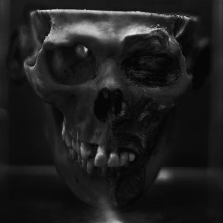
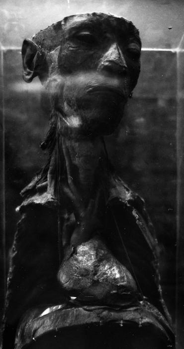
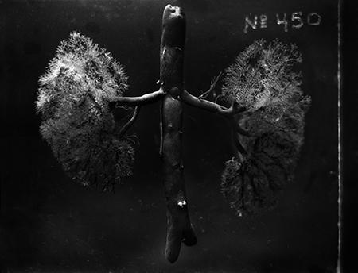
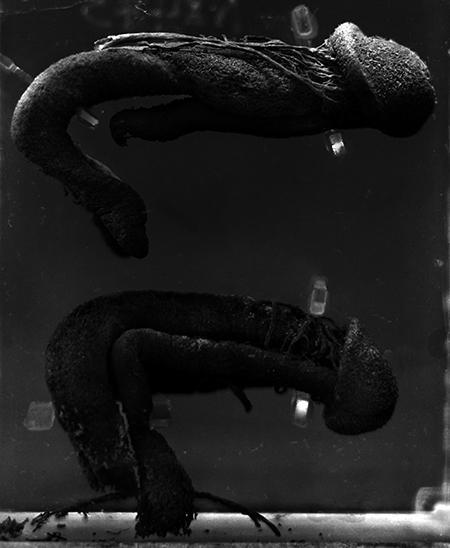

2014
OJardim
Fotografias

Oegoísta
- Dimensões
- 55 × 55 cm
- Série
- OJardim
- Ano
- 2014

Illuminatus
- Dimensões
- 75 × 40 cm
- Série
- OJardim
- Ano
- 2014

Arbor
- Dimensões
- 55 × 72 cm
- Série
- OJardim
- Ano
- 2014

OsIrmãos
- Dimensões
- 67 × 55 cm
- Série
- OJardim
- Ano
- 2014
OJardim é uma série fotográfica realizada com câmeras de grande formato (5 × 7 polegadas) e médio formato (6 × 7 cm), utilizando uma lente artesanal desenvolvida pelo artista. Construída a partir de elementos ópticos de maior qualidade em relação às lentes experimentais anteriores, essa lente permitiu ampliar a definição das imagens e registrar com maior precisão detalhes da anatomia humana.
A série é composta por 25 fotografias de partes do corpo humano preservadas por dessecação ou em solução de formaldeído. As imagens foram realizadas em uma coleção anatômica da cidade de São Paulo.
Os títulos das obras seguem uma convenção própria de escrita, na qual artigo e substantivo são apresentados como uma única palavra, como em Oegoísta e OsIrmãos. Essa operação atravessa toda a série e estabelece uma relação entre linguagem, nomeação e imagem. As fotografias não apresentam indivíduos identificáveis, mas fragmentos anatômicos que recebem nomes associados a personagens, papéis sociais e figuras recorrentes das narrativas humanas.
Em OJardim, o corpo deixa de funcionar como representação de uma identidade específica e passa a operar como suporte para projeções culturais e simbólicas. Os fragmentos anatômicos tornam-se pontos de ancoragem para arquétipos construídos historicamente por diferentes sociedades, produzindo um conjunto de imagens em que classificação, linguagem e imaginação coletiva se sobrepõem.
A série foi apresentada em São Paulo em 2015. As obras encontram-se em processo de aquisição pelo Museu da Cidade de São Paulo.